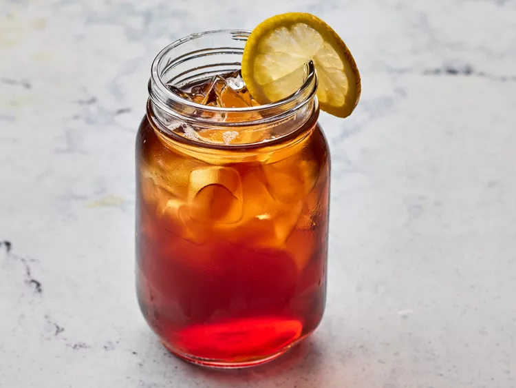

Smooth Sweet Tea

Description
This sweet tea is a classic Southern drink perfect for hot summer days!
Ingredients
- 1 pinch baking soda
- 2 cups boiling water
- 6 tea bags
- ¾ cup white sugar
- 6 cups cool water
Steps
- Gather ingredients.
- Sprinkle a pinch of baking soda into a 64-ounce, heat-proof glass pitcher. Pour in boiling water and add tea bags. Cover and allow to steep for 15 minutes.
- Remove tea bags and discard; stir in sugar until dissolved. Pour in cool water; refrigerate until cold, about 3 hours.
- Enjoy!
Home